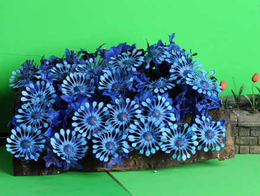
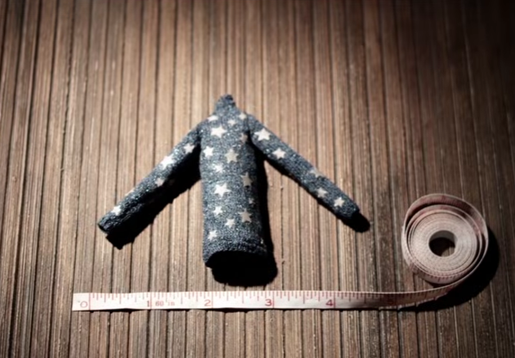
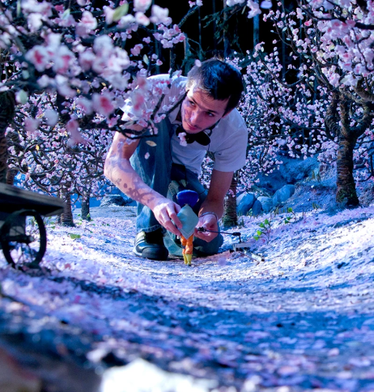

Producción y Estudio de Grabación
Estudios Involucrados
- LAIKA Studios: Principal estudio de animación independiente responsable de la producción. Ubicado en Hillsboro, Oregón (EE. UU.), sus instalaciones albergan un almacén industrial de más de 13,000 m² donde se construyó todo el universo en miniatura de la película. Coraline fue la producción que consagró a LAIKA a nivel mundial.LAIKA Studios: Principal estudio de animación independiente responsable de la producción. Ubicado en Hillsboro, Oregón (EE. UU.), sus instalaciones albergan un almacén industrial de más de 13,000 m² donde se construyó todo el universo en miniatura de la película. Coraline fue la producción que consagró a LAIKA a nivel mundial.
- Pandemonium Films: Compañía productora del cofundador y productor Bill Mechanic, que adquirió los derechos cinematográficos del libro de Neil Gaiman y se alió con LAIKA para financiar el proyecto.
- Skywalker Sound (Lucasfilm Ltd.): Famoso estudio de postproducción de sonido ubicado en California, encargado de la mezcla final de audio, el diseño de efectos sonoros y la grabación del catálogo sonoro de la película.


Datos Curiosos sobre el Rodaje y la Tecnología
- Pioneros en Impresión 3D: Fue la primera película en utilizar la tecnología de impresión 3D a color para el reemplazo de piezas faciales. Gracias a esto, la marioneta de Coraline podía realizar más de 207,000 expresiones faciales diferentes, logrando una emotividad nunca antes vista en stop-motion.
- Grabación en 3D Real (Estereoscopía): A diferencia de las películas convencionales que convierten el 3D en postproducción, Coraline se grabó utilizando cámaras con dos lentes (que simulaban la distancia entre los ojos humanos) alineadas sobre rieles programados para fotografiar cada escena de forma estereoscópica real.
- La creación de los conjuntos de escenografía para Coraline destacó por una desbordante inventiva donde los objetos más cotidianos se transformaron en plantas y elementos fantásticos. En el diseño del jardín mágico, los escenógrafos utilizaron más de 1.300 pies cuadrados de piel sintética —área equivalente a la mitad de una pista de tenis— para reemplazar el césped tradicional, mientras que los lirios se elaboraron volteando dedales de silicona que luego fueron pintados a mano, y el centro de las flores albergaba pelotas de ping-pong. La atención al detalle alcanzó niveles insólitos en el huerto, para el cual se fabricaron 40 árboles a mano cuyas flores de cerezo se crearon utilizando granos de palomitas de maíz reventados, enfriados, pintados con aerosol y retocados meticulosamente a mano. Finalmente, la nieve que cubría los entornos del Palacio Rosa se logró mediante una ingeniosa combinación de superpegamento y bicarbonato de sodio.
- Vestuario con Microtejido: Los trajes y suéteres de Coraline eran tan pequeños que la diseñadora Althea Crome tuvo que tejerlos a mano utilizando hilos quirúrgicos y agujas del grosor de un alfiler. Para construir una marioneta para Coraline, 10 artesanos trabajaron durante 3-4 meses.
- Rodaje:El rodaje de Coraline representó un desafío técnico de dimensiones históricas dentro de la animación stop-motion. Con una etapa de preproducción que tomó dos años, la filmación principal se extendió por más de 18 meses, un proceso extremadamente meticuloso que requirió la fabricación y uso simultáneo de varias copias de los títeres en múltiples conjuntos de trabajo. Para llevar a cabo esta hazaña, los estudios desplegaron una superficie de 183.000 pies cuadrados (aproximadamente el doble de una manzana de Manhattan), albergando más de 130 decorados repartidos en 52 escenarios diferentes, lo que constituyó el mayor despliegue de escenarios jamás realizado para un largometraje de esta naturaleza. Además de su escala física, la producción hizo historia en la innovación visual al realizar, por primera vez en la animación cuadro por cuadro, una secuencia de morphing (transformación gradual) que duró 130 fotogramas, equivalente a casi 6 segundos en pantalla.
- Las marionetas y escenas multitudinarias: Las escenas más deslumbrantes de Coraline dependieron del uso masivo y meticuloso de marionetas físicas. Para llevar a cabo secuencias complejas con una gran cantidad de personajes en pantalla, el equipo de producción tuvo que fabricar e interconectar cientos de modelos individuales. Un ejemplo impresionante ocurre en el teatro subterráneo, donde 248 perros Scottie de utilería permanecen sentados en la audiencia acompañando a Coraline y Wybie mientras observan el espectáculo de la Señorita Spink y la Señorita Forcible. Asimismo, la compleja animación del Circo de Ratones Saltarines alcanzó su punto máximo al lograr mantener en pantalla a 61 ratones moviéndose de forma simultánea y cuidadosamente coreografiada fotograma a fotograma.
- La expresividad de Coraline: El diseño y la construcción de la protagonista exigieron una ingeniería sumamente compleja para lograr el nivel de fluidez necesario en pantalla. Se fabricaron un total de 28 marionetas de Coraline en distintas escalas, siendo la principal una figura de apenas 9,5 pulgadas (24 cm) de altura. Gracias a un innovador sistema modular de reemplazo facial, el personaje contó con 207.336 combinaciones posibles de expresiones (frente a las 17.633 disponibles para la Otra Madre), lo que permitió alcanzar momentos de enorme emotividad; un claro ejemplo de esta precisión técnica ocurre en una escena donde Coraline realiza 16 gestos faciales diferentes en un lapso de tan solo 35 segundos.




